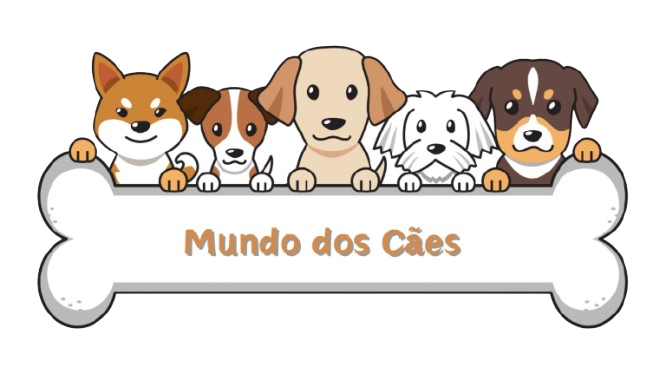
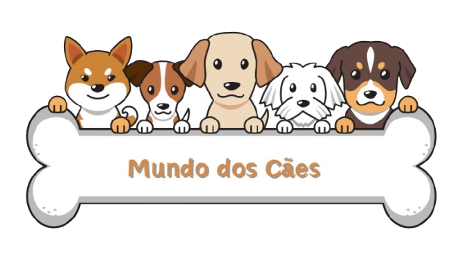
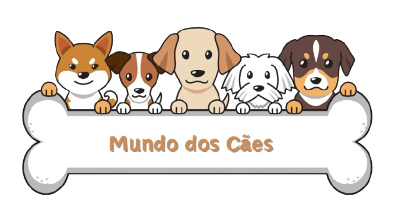
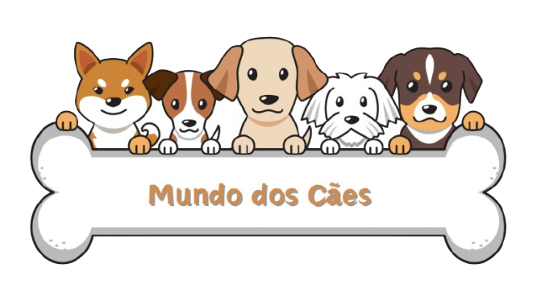

Os cães têm cerca de 300 milhões de receptores olfativos no nariz, enquanto os humanos têm apenas 6 milhões. Isso os torna especialistas em detectar cheiros, como alimentos, pessoas e até doenças como câncer e diabetes.
Os cães não têm glândulas sudoríparas espalhadas pelo corpo como os humanos. Eles suam apenas através das almofadas das patas e regulam a temperatura corporal principalmente pela respiração ofegante.
Os cães conseguem identificar emoções humanas através do tom de voz, postura corporal e até pelo cheiro que liberamos em diferentes estados emocionais. Por isso, muitas vezes eles "parecem" saber quando estamos tristes ou felizes.
Assim como os humanos, os cães entram em um estado de sono REM (Movimento Rápido dos Olhos), onde ocorrem os sonhos. Filhotes e cães mais velhos tendem a sonhar mais frequentemente, e suas patas se movendo durante o sono podem indicar que estão sonhando com algo ativo.
Estudos sugerem que os cães têm uma habilidade única de se orientar pelo campo magnético da Terra. Eles podem usar esse sentido para encontrar o caminho de volta para casa em longas distâncias.
Universo Canino, o lugar perfeito para apaixonados por cachorros! Nosso site foi criado para celebrar a conexão especial entre humanos e seus melhores amigos de quatro patas. Nossa missão é ser uma fonte confiável e inspiradora para quem ama cães, promovendo conhecimento e valorizando o bem-estar desses incríveis amigos. Seja você tutor de um cãozinho, estudante de comportamento animal ou apenas alguém apaixonado por esses animais incríveis, nosso site foi feito para você! Junte-se a nós e descubra o que faz dos cachorros os parceiros mais leais e especiais que podemos ter